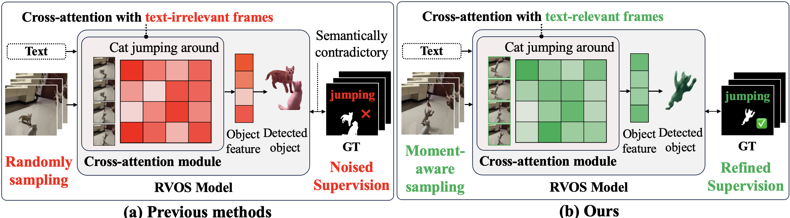
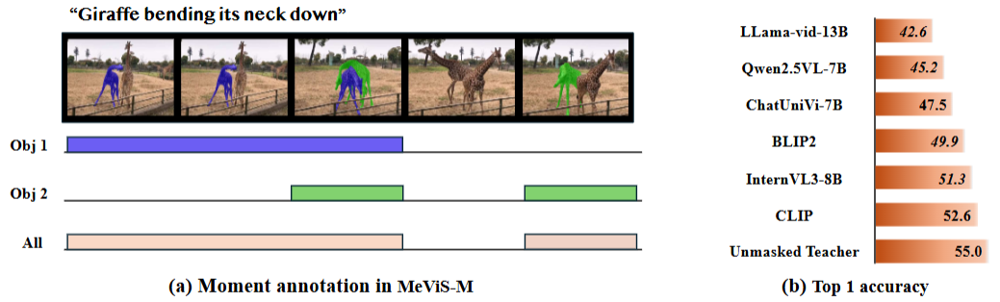
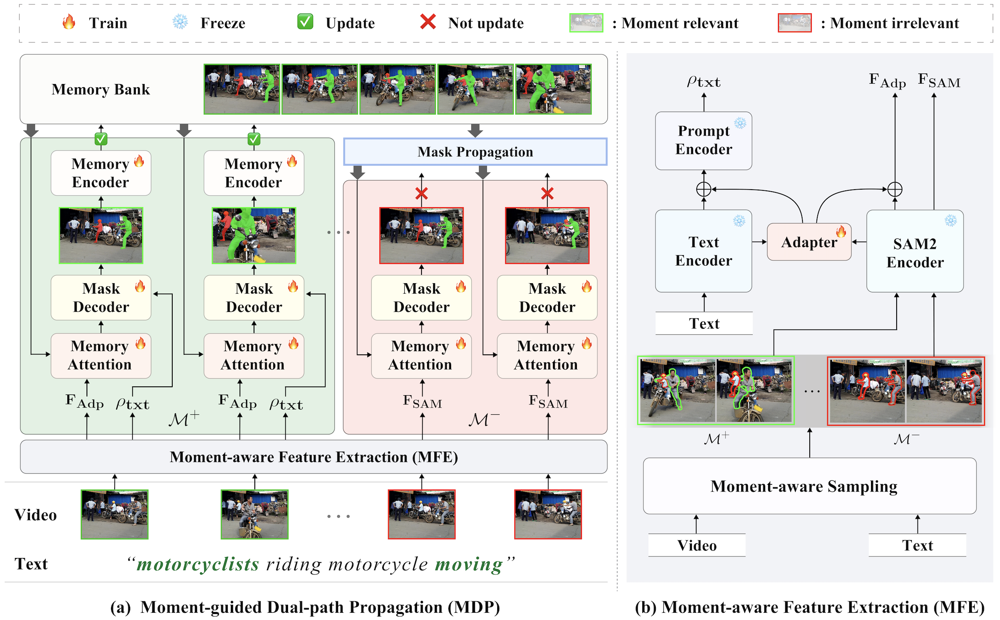
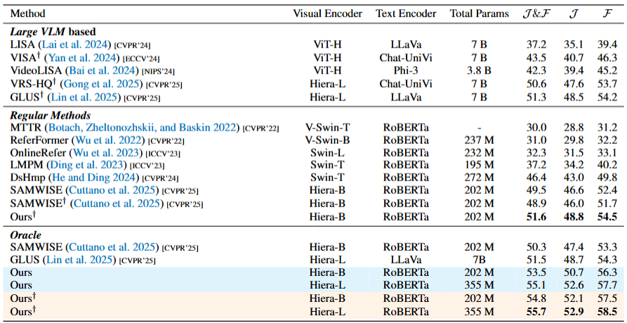
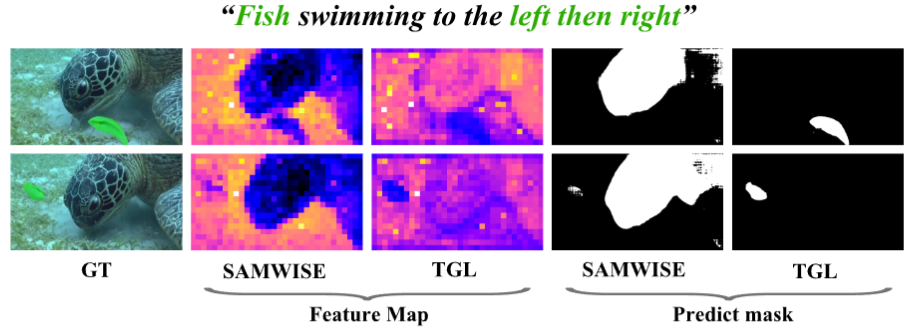

Referring Video Object Segmentation (RVOS) aims to segment and track objects in videos based on natural language expressions, requiring precise alignment between visual content and textual queries. However, existing methods often suffer from semantic misalignment, largely due to indiscriminate frame sampling and supervision of all visible objects during training—regardless of their actual relevance to the expression. We identify the core problem as the absence of an explicit temporal learning signal in conventional training paradigms. To address this, we introduce MeViS-M, a dataset built upon the challenging MeViS benchmark, where we manually annotate temporal spans when each object is referred to by the expression. These annotations provide a direct, semantically grounded supervision signal that was previously missing. To leverage this signal, we propose Temporally Grounded Learning (TGL), a novel learning framework that directly incorporates temporal grounding into the training process. Within this framework, we introduce two key strategies. First, Moment-guided Dual-path Propagation (MDP) improves both grounding and tracking by decoupling languageguided segmentation for relevant moments from language-agnostic propagation for others. Second, Object-level Selective Supervision (OSS) supervises only the objects temporally aligned with the expression in each training clip, thereby reducing semantic noise and reinforcing language-conditioned learning. Extensive experiments demonstrate that our TGL framework effectively leverages temporal signal to establish a new state-of-the-art on the challenging MeViS benchmark. We will make our code and the MeViS-M dataset publicly available.

Importance of moment-aware approach. (a) Most existing methods rely on random frame sampling, leading to unnatural learning dynamics by forcing models to segment referred objects even in frames unrelated to the given text. (b) Our method explicitly focuses on text-relevant moments to enable semantically and temporally grounded segmentation.

MeViS-M dataset and analysis on valid set. (a) A moment annotation example from MeViS-M, showing temporal spans labeled for each object referred to by the given expression. (b) Comparison of top-1 accuracy for key frame selection on VLMs. The consistently low accuracy across all models underscores the limitation of existing VLMs in moment retrieval and highlights the necessity of fine-grained moment annotations.

Overall pipeline. In (a), \( \mathbf{F}_{\text{Adp}} \) of text-relevant frames are utilized for mask generation and memory update, while text-irrelevant frames employ \( \mathbf{F}_{\text{SAM}} \) for mask generation without contributing to the memory update. (b) illustrates how \( \mathbf{F}_{\text{Adp}} \) and \( \mathbf{F}_{\text{SAM}} \) are extracted from relevant and irrelevant frames, respectively, and how visual features are integrated into the prompt.

Comparison on the MeViS dataset. Oracle uses ground-truth moments from MeViS-M at inference. † indicates methods that leverage Vision-Language Models (VLMs) for keyframe selection. Oracle + Ours† uses VLMs to extract keyframes from ground-truth moments. We adopt Chrono (Meinardus et al. 2024) and BLIP-2 (Li et al. 2023) as keyframe selectors.

PCA-based feature maps and segmentation results of SAMWISE & TGL.